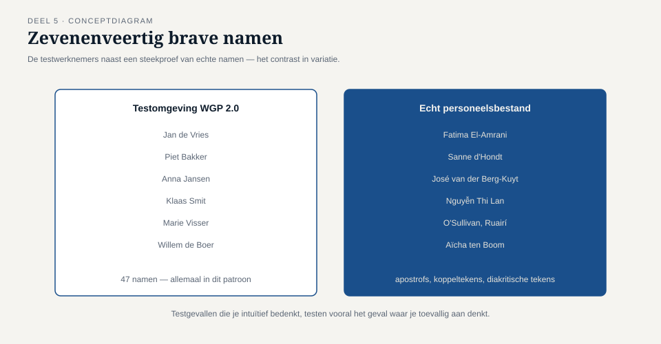
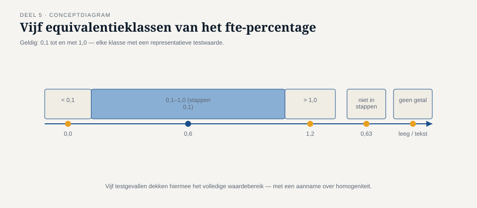
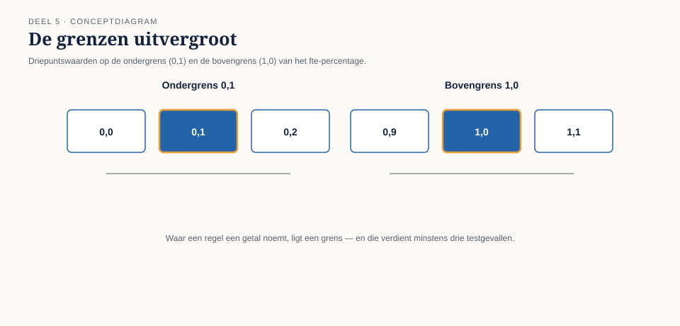
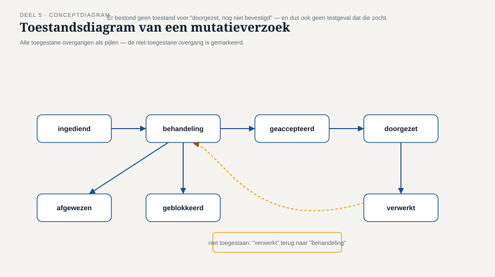

Deel 5 — Black-boxtechnieken
Slidedeck · Ductus-cursus Testen en Kwaliteitsborging · niveau 1 · deel 5 van 30 · 27 slides
Slidetypen: titleSlide, sectionSlide, bulletsSlide, statementSlide, quoteSlide, tableSlide, figureSlide, opdrachtSlide.
Slide 1 — titleSlide
Black-boxtechnieken Deel 5 · Niveau 1 Fundament Cursus Testen en Kwaliteitsborging
Slide 2 — statementSlide
47 fictieve werknemers in de testomgeving.
Geen enkele apostrof. Geen enkele koppelteken. Geen enkel dubbel dienstverband.
Slide 3 — figureSlide

Slide 4 — statementSlide
Testgevallen die je intuïtief bedenkt, testen het geval waar je toevallig aan denkt.
Systematische technieken dwingen je de gevallen te testen waaraan je niet vanzelf denkt.
Dit is bevinding T6.
Slide 5 — bulletsSlide
Vier technieken vandaag
- Equivalentieklassen
- Grenswaardeanalyse
- Beslissingstabellen
- Toestandsovergangen
Elk beantwoordt een andere vraag. Geen vervangt de ander.
Slide 6 — sectionSlide
1. Equivalentieklassen
Slide 7 — figureSlide

Slide 8 — statementSlide
Geldig én ongeldig — beide horen getest te worden.
WGP 2.0 testte vrijwel uitsluitend geldige klassen.
Slide 9 — opdrachtSlide
Opdracht 5.1 — Equivalentieklassen vinden
Aantal dienstjaren, 0 t/m 45. Alle klassen, geldig én ongeldig.
15 minuten, individueel.
Slide 10 — sectionSlide
2. Grenswaardeanalyse
Slide 11 — statementSlide
Waar een regel een getal noemt, ligt een grens.
Waar een grens ligt: erop, eronder, erboven. Minstens drie testgevallen.
Slide 12 — figureSlide

Slide 13 — statementSlide
Geen testgeval rond de grens van 24 maanden terug.
Geen testgeval rond de grens tussen "deze maand" en "vorige maand".
Precies waar de tegenstrijdigheid uit deel 4 toesloeg.
Slide 14 — opdrachtSlide
Opdracht 5.2 — Grenzen zoeken in de casus
Driepuntswaarden voor de 24-maandengrens. Waarom is "24 maanden" zelf al ambigu?
15 minuten, tweetallen.
Slide 15 — sectionSlide
3. Beslissingstabellen
Slide 16 — tableSlide
Drie condities, acht regels
| Ingangsdatum | Regeling | Plausibel? | Resultaat |
|---|---|---|---|
| verleden | verzekerd | ja | verwerken + correctie |
| verleden | fonds | ja | naar fondsbeheerder |
| verleden | verzekerd | nee | blokkeren |
| verleden | fonds | nee | blokkeren |
| (+ 4 regels heden/toekomst) |
Slide 17 — statementSlide
Van de acht regels: twee getest.
Allebei uit de kolom "heden/toekomst".
Geen enkele "verleden"-regel is ooit geraakt.
Slide 18 — opdrachtSlide
Opdracht 5.3 — Bouw de beslissingstabel
Reconstrueer alle acht regels zelf. Welke waren vermoedelijk getest?
Voeg een vierde conditie toe — wat gebeurt er met het aantal regels?
30 minuten, groepjes van drie.
Slide 19 — sectionSlide
4. Toestandsovergangen
Slide 20 — figureSlide

Slide 21 — statementSlide
Een systeem dat alleen getest is op zijn bedoelde paden,
is nooit getest op wat er gebeurt als het tussen twee toestanden blijft hangen.
Dat is precies waar productie-incidenten wonen.
Slide 22 — opdrachtSlide
Opdracht 5.4 — Teken het ontbrekende stuk
Voeg de toestand "doorgezet, niet bevestigd" toe — precies waar de storing zich voordeed.
Twee testgevallen die eruit volgen.
20 minuten, groepjes van drie.
Slide 23 — tableSlide
Welke techniek wanneer?
| Techniek | Beste voor |
|---|---|
| Equivalentieklassen | één veld, breed bereik |
| Grenswaarden | scherpe randen |
| Beslissingstabellen | meerdere condities samen |
| Toestandsovergangen | gedrag afhankelijk van geschiedenis |
Slide 24 — bulletsSlide
TMAP-lens
- Zelfde technieken, onder "testontwerptechnieken"
- Sterkere koppeling aan risico: niet elke conditie evenveel aandacht
- Combinatorisch testen (pairwise) als aanvulling bij veel condities
Volledig uitgewerkt in deel 7 (risico) en deel 13 (niveau 2, pairwise).
Slide 25 — bulletsSlide
Examenaansluiting — CTFL hoofdstuk 4 (black-box)
- Equivalentieklassen, grenswaarden, beslissingstabellen, toestandsovergangen
Let op: vergeet nooit een ongeldige klasse, vergeet nooit een regel in de tabel.
Slide 26 — bulletsSlide
Huiswerk
- Opdracht 5.5 — kies je techniek, vier scenario's (startpunt deel 6)
- Oefentoets, tien vragen
Slide 27 — statementSlide
Volgende keer: white-box en ervaringsgebaseerd testen
Hoeveel van de vijf condities in een DMN-tabel komen echt als apart pad terug in de code?